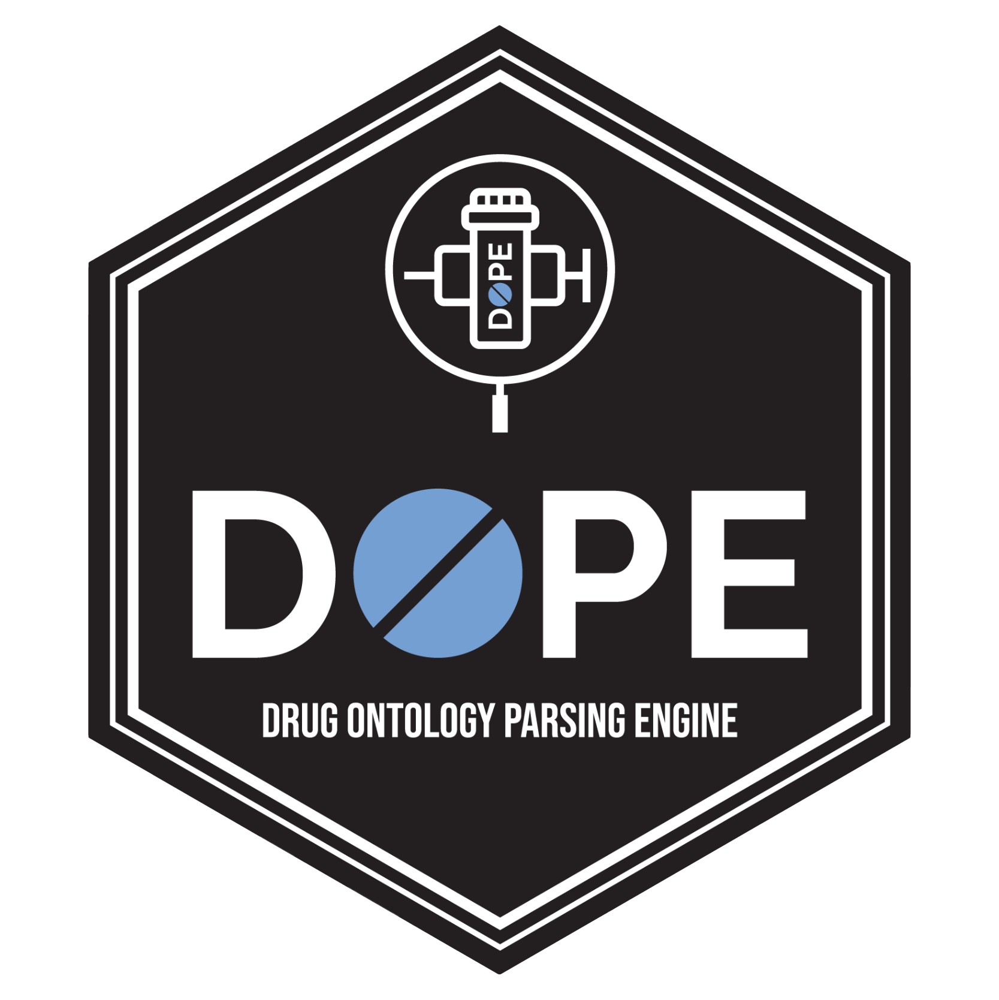

Drug Ontology Parsing Engine (DOPE) 
The goal of DOPE is to provide a structured vocabulary and tools to look up details on drugs tracked by the DEA. The data structure is:

Installation
Official Release
You can install the released version of DOPE from CRAN with:
install.packages("DOPE")Development Release
Run these two lines of code to install DOPE from GitHub (this requires RTools for Windows or Xcode for Mac to be installed on your computer):
if (!requireNamespace("devtools")) install.packages("devtools")
devtools::install_github("labouz/DOPE")Examples
You can look up details on a drug with the lookup() function. It will check brand, generic and street names.
The lookup funciton supports vectorized lookups:
library(DOPE)
lookup("cheese", "pizza", "with", "a", "soda")
lookup(c("Buprenorphine", "Tramadol", "Bup/Nx"))If your only care about the category and/or class and/or if you serach returns many matches you can use the compress_lookup() function to drop columns and then remove duplicate rorws.
lookup(c("Buprenorphine", "Tramadol", "Bup/Nx")) %>%
compress_lookup(compressCategory = FALSE,
compressClass = TRUE,
compressSynonym = TRUE)DOPE now allows for parsing out drug names from a vector which contains free text with the parse() function. You can use it in conjuction withlookup() and compress_lookup()
data(drug_df)
parse(drug_df$textdrug[1:5]) %>%
lookup()